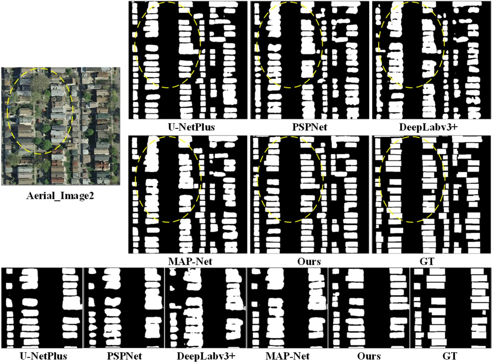
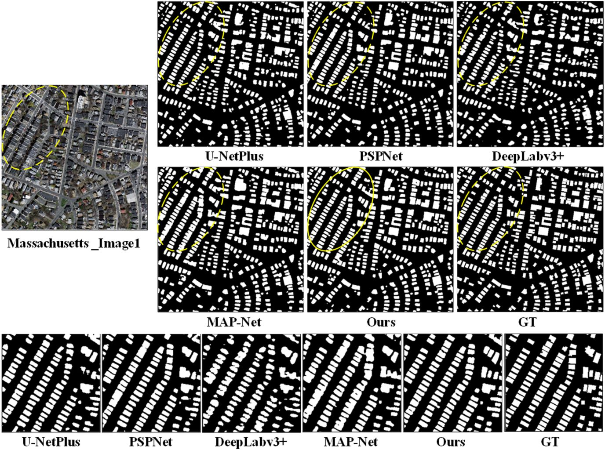

bSchool of Geosciences and Info-Physics, Central South University, Changsha 410012, China
Most of the existing approaches to the extraction of buildings from high-resolution orthoimages consider the problem as semantic segmentation, which extracts a pixel-wise mask for buildings and trains end-to-end with manually labeled building maps. However, as buildings are highly structured, such a strategy suffers several problems, such as blurred boundaries and the adhesion to close objects. To alleviate the above problems, we proposed a new strategy that also considers the contours of the buildings. Both the contours and structures of the buildings are jointly learned in the same network. The contours are learnable because the boundary of the mask labels of buildings implicitly represents the contours of buildings. We utilized the building contour information embedded in the labels to optimize the representation of building boundaries, then combined the contour information with multi-scale semantic features to enhance the robustness to image spatial resolution. The experimental results showed that the proposed method achieved 91.64%, 81.34%, and 74.51% intersection over union (IoU) on the WHU, Aerial, and Massachusetts building datasets, and outperformed the state-of-the-art (SOTA) methods. It significantly improved the accuracy of building boundaries, especially for the edges of adjacent buildings.
WHU Dataset
Aerial Dataset
Massachusetts Dataset
The code is made publicly available at github.
This work was supported by the following grants: National Key Research and Development Program of China (Project No. 2018YFC0825803), National Natural Science Foundation of China (Projects No.: 42071355, 41631174, 41871291), Sichuan Science and Technology Program(2020JDTD0003) and Cultivation Program for the Excellent Doctoral Dissertation of Southwest Jiaotong University (2020YBPY09).